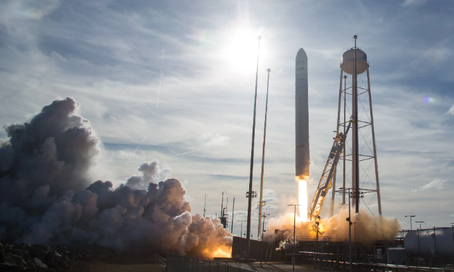

不得不说，俄罗斯的航天发动机是真的强！根据俄罗斯卫星通讯社莫斯科7月16日消息 据俄罗斯动力机械科研生产联合体（NPO Energomash）官网消息，全球2020年40%的航天发射使用的是俄罗斯生产制造的火箭发动机。
发动机技术哪家强？
举个例子俄罗斯的RD-180发动机，更是被美国用神话来形容的发动机，ULA的宇宙神5就是这个发动机，都知道百分之百的成功率。就连当时刚刚入门航天业的马斯克也曾经寻求门路购买俄罗斯的发动机，那时候毛子一看刚起步的小航司看起来没那么实力，就给拒绝了。所以才有了后来的梅林发动机和猛禽。
而且，中国也借鉴了不少俄罗斯的技术，别总说人家再吃老本，俄罗斯发动机的技术一直在发展并不是停滞的，有了前苏联的老本所以俄罗斯在发动机的研发迭代上可以更加的有效率，这个我们必须承认！